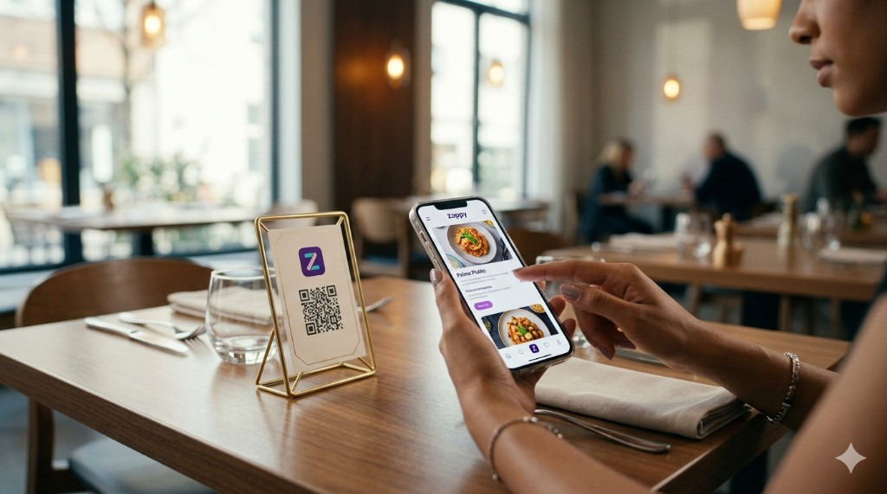

Sistema integrato
L’ecosistema che fa girare il locale
Zappy non è una feature isolata: è una catena di software e hardware progettata per portare ordine dalla sala alla cucina — con dati, velocità e controllo.

Match social
Photo gallery
Room quiz
Lucky reward
01 · Cliente
App cliente: QR, menu, pagamento
Il cliente scansiona, ordina e paga senza attrito. Il tavolo è identificato in modo sicuro: niente confusione in cassa.
- · Menu con immagini, allergeni e varianti
- · Carrello condivisibile e note chiare
- · Pagamento mobile (card, wallet)
Web + native
Brand locale

02 · Sala
App barista · tablet POS
Un’unica superficie per leggere la sala: ordini in arrivo, priorità, stato e tavoli — con UX pensata per velocità e zero errori.
- · Coda live con timestamp
- · Stati ordine e gestione eccezioni
- · Vista tavoli e turni

03 · Back-office
Dashboard admin
Menu, listini, immagini, disponibilità e analytics: il centro di comando che tiene il locale allineato — anche quando cambi offerta ogni settimana.
- · CMS menu con versioning
- · Ruoli e permessi staff
- · Report vendite e prodotti top

04 · Cucina
Stampante automatica
Le comande escono dove servono, quando servono. Routing per reparto, meno voci sbagliate, più ritmo in cucina.
05 · Onboarding
Starter kit
Tablet, QR personalizzati, stampante e setup guidato: arrivi operativo con un percorso chiaro, non con scatole da assemblare al buio.
- · QR brandizzati per tavolo/area
- · Config stampante e rete
- · Training rapido per lo staff
Nel kit
✓
Tablet professionale
App barista preconfigurata
✓
QR e materiali
Coerenti con il brand
✓
Stampante + setup
Integrazione con Zappy
Integrazione totale
Un solo flusso, dall’ingresso al conto
Ogni componente parla la stessa lingua: quando il cliente paga, la sala lo vede, la cucina prepara, la dashboard registra. Niente bridge fragili o tab Excel paralleli.